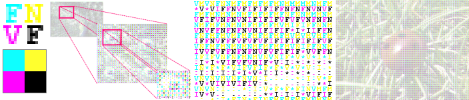

This is my ASCII Art story, which stretches from 1975 to 2011,
from manual typewriters
and card punches to computer generation, pixel shaders, real-time animation,
and color printing.

This is how I started back in 1975 with Typewriter Art, and my resurgence in interest in 2011. All of the ASCII
art on this webpage is text art, meaning that it can be viewed in Notepad.
[Text Art Webpage]

I want to learn how to write a pixel shader that uses two textures,
but I'm bored with all of the examples on the internet.
I want to do something that I can't easily find code for online.
I get the idea of writing a pixel shader for ASCII art. Here's how it went.
[Shader ASCII Art Webpage]

I've been intrigued for a while by the idea of making a color version of ASCII art.
The only color ASCII art I could find online used characters drawn in the same color as the pixel they represent,
but that's really cheating. Given enough colors we could draw the whole picture using different colored copies of the letter M, but where's the challenge in that?
Ideally each character should be drawn using only a small set of saturated colors so that the images could in principle
be created on an old-school typewriter with only a few colored ribbons. It turns out that we can get away with only three or four ribbons.
[Color ASCII Art Webpage]
I placed a 6ft by 8ft ASCII Art poster of a ladybug at the end of a long corridor at UNT Discovery Park
on Friday October 21, 2011 late at night after all of the administrators had gone
home for the weekend. I also left a notebook for comments. Click through to see what people had to say.
[Guerilla ASCII Art Webpage]
On January 4, 2012
NASA released an incredibly clear and detailed 8000x8000 pixel image of the Earth,
called Blue Marble 2012, in which each pixel
represents less than a square kilometer. The following ASCII Art images were made from this photograph.
[ASCII Marble Webpage]
Serigraphy enables us to reach levels of contrast that were previously unattainable.
In fact, serigraphic ASCII images become almost photorealistic.
Don't believe me? Then take the test.
[Photorealistic ASCII Art Webpage]
Here's a table that gives a list of links to my favorite ASCII art pieces, with a brief description of their properties.
[ASCII Art Image Index]